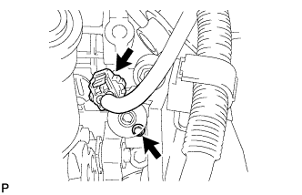

CỤM VAN ĐIỀU KHIỂN DẦU PHỐI KHÍ TRỤC CAM > LẮP |
| 1. LẮP CỤM VAN ĐIỀU KHIỂN DẦU PHỐI KHÍ TRỤC CAM |
|  |
Lắp gioăng chữ O mới vào van điều khiển dầu.
Lắp van điều khiển dầu bằng bulông.
Nối giắc van điều khiển dầu.
| 2. NỐI CÁP VÀO CỰC ÂM ẮC QUY |
| 3. TIẾN HÀNH THIẾT LẬP BAN ĐẦU |
Tiến hành thiết lập ban đầu (Xem trang Kích chuột vào đây).